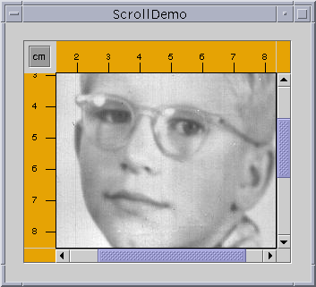

Feedback Form
|
|
Start of Tutorial > Start of Trail > Start of Lesson |
Search
Feedback Form |
AJScrollPaneprovides a scrollable view of a component. When screen real estate is limited, use a scroll pane to display a component that is large or one whose size can change dynamically.
The code to create a scroll pane can be minimal. For example, here's a picture of a demo program that puts a text area in a scroll pane because the text area's size grows dynamically as text is appended to it:
Here's the code that creates the text area, makes it the scroll pane's client, and adds the scroll pane to the frame: The program provides the text area as an argument totextArea = new JTextArea(5, 30); JScrollPane scrollPane = new JScrollPane(textArea); ... contentPane.setPreferredSize(new Dimension(400, 100)); ... contentPane.add(scrollPane, BorderLayout.CENTER);JScrollPane's constructor. This establishes the text area as the scroll pane's client. The scroll pane handles everything else: creating the scroll bars when necessary, redrawing the client when the user moves the scroll knobs, and so on.Without the bold line of code, the scroll pane would compute its preferred size so that the text area, at its preferred size, would fit entirely within the scroll pane. Consequently, the scroll pane would have no scroll bars. The bold line sets the preferred size of the scroll pane's container such that the scroll pane is forced into a shorter-than-preferred area. Thus when the program first appears onscreen, the scroll pane has a vertical scroll bar. Refer to Sizing a Scroll Pane for information about using other techniques for making a scroll pane the size you want.
The rest of this section discusses the following topics:
Here is a snapshot of an application that uses a customized scroll pane to view a large photograph: The scroll pane in this application looks very different from the one in the previous demo program. Rather than displaying text, this scroll pane contains a large image. The scroll pane also has two scroll bars, a row header, a column header, and four corners, three of which have been customized.This program establishes the scroll pane's client when creating the scroll pane:
Try this:
- Compile and run the application. The main source file is
ScrollDemo.java. You also need a few other source files and an image file. See the examples index for links to all the files required by this example.
See Getting Started with Swing if you need help compiling or running this application.- Move the knobs on the scroll bars. Watch the image scroll and the horizontal and vertical rulers scroll along.
- Click the cm toggle in the upper left corner of the scroll pane. The units on the row and column headers change to inches (or back to centimeters).
- Click the arrow buttons on the scroll bars. Also, try clicking on the track above or below the knob on the vertical scroll bar, or to the left or right of the horizontal one.
- Resize the window. Notice that the scroll bars disappear when the scroll pane is large enough to display the entire image and reappear again when the scroll pane is too small to show the entire client.
You can change a scroll pane's client dynamically by calling the// where the member variables are declared private ScrollablePicture picture; ... // where the GUI is created picture = new ScrollablePicture( ... ); JScrollPane pictureScrollPane = new JScrollPane(picture);setViewportViewmethod. Note thatJScrollPanehas no correspondinggetViewportViewmethod, so you should cache the client object in a variable if you need to refer to it later.When the user manipulates the scroll bars in a scroll pane, the area of the client that is visible changes accordingly. This picture shows the relationship between the scroll pane and its client and indicates the classes that the scroll pane commissions to help:
A scroll pane uses a JViewportA scroll pane uses two separate instances of
JScrollBarWhen the user moves the knob on the vertical scroll bar up and down, the visible area of the client moves up and down. Similarly, when the user moves the knob on the horizontal scroll bar to the right and left, the visible area of the client moves back and forth accordingly. The position of the knob relative to its track is proportionally equal to the position of the visible area relative to the client. In the Java Look & Feel and some others, the size of the knob gives a visual clue as to how much of the client is visible. By clicking a button, the user can scroll by a unit increment. By clicking within the track, the user can scroll by a block increment. Information about unit and block increments is in Implementing a Scrolling-Savvy Client.
Typical programs don't directly instantiate or call methods on a viewport or scroll bar. Instead, programs achieve their scrolling behavior using the
JScrollPaneAPI and the API discussed in Implementing a Scrolling-Savvy Client. Some scrolling-savvy components such asJList,JTable, andJTreealso provide additional API to help you affect their scrolling behavior.
On startup, the scroll pane in theScrollDemoapplication has two scroll bars. If you make the window as large as your screen, both scroll bars disappear because they are no longer needed. If you then shrink the height of the window without changing its width, the vertical scroll bar reappears. Further experimentation will show that in this application both scroll bars disappear and reappear as needed. This behavior is controlled by the scroll pane's scroll bar policy, Actually, it's two policies: you specify the policy for each scroll bar separately.
ScrollDemodoesn't explicitly set the scroll pane's sroll bar policies--it uses the default. But you can set the policies when you create the scroll pane or change them dynamically.Of the constructors provided by
JScrollPane, these two let you set the scroll bar policies when you create the scroll pane:The firstJScrollPane(Component, int, int) JScrollPane(int, int)intspecifies the policy for the vertical scroll bar, the second specifies the policy for the horizontal scroll bar. You can also set the policies dynamically with thesetHorizontalScrollBarPolicyandsetVerticalScrollBarPolicymethods. With both the constructors and the methods, use one of the following constants defined in theScrollPaneConstantsJScrollPane):
Policy Description VERTICAL_SCROLLBAR_AS_NEEDED
HORIZONTAL_SCROLLBAR_AS_NEEDEDThe default. The scroll bar appears when the viewport is smaller than the client and disappears when the viewport is larger than the client. VERTICAL_SCROLLBAR_ALWAYS
HORIZONTAL_SCROLLBAR_ALWAYSAlways display the scroll bar. The knob disappears if the viewport is large enough to show the whole client. VERTICAL_SCROLLBAR_NEVER
HORIZONTAL_SCROLLBAR_NEVERNever display the scroll bar. Use this option if you don't want the user to directly control what part of the client is shown. Perhaps you have an application that requires all scrolling to occur programmatically.
The area drawn by a scroll pane consists of up to nine parts: the center, four sides, and four corners. The center is the only component that is always present in all scroll panes. Besides scroll bars, the sides can contain column and row headers. A corner component is visible only if both sides that intersect at that corner contain visible components.As shown in the figure, the scroll pane in ScrollDemohas custom row and column headers. Additionally, because all four sides are populated, all four corners are present. The program customizes three of the corners--two just fill their area with the same color as theRules, and the other contains a toggle button. The fourth corner, the lower right corner, is the default provided by the scroll pane. Notice that because the row and column headers are always present in this example, that the toggle button is also always present.If a corner contains a control that the user needs access to all the time, make sure the sides that intersect at the corner are always present. For example, if this application placed the toggle in the lower right corner where the scroll bars intersect, then the toggle would disappear if the user resized the window and even one of the scroll bars disappeared.
The scroll pane's row and column headers are provided by a custom
JComponentsubclass,RuleYou can use any component for a scroll pane's row and column headers. The scroll pane puts the row and column headers in//...where the member variables are defined: private Rule columnView; private Rule rowView; ... //...where the GUI is initialized: ImageIcon david = new ImageIcon("images/youngdad.jpeg"); ... // Create the row and column headers columnView = new Rule(Rule.HORIZONTAL, true); columnView.setPreferredWidth(david.getIconWidth()); rowView = new Rule(Rule.VERTICAL, true); rowView.setPreferredHeight(david.getIconHeight()); ... pictureScrollPane.setColumnHeaderView(columnView); pictureScrollPane.setRowHeaderView(rowView); ...JViewPorts of their own. Thus, when scrolling horizontally, the column header follows along, and when scrolling vertically, the row header follows along.As a
JComponentsubclass, our customRuleclass puts its rendering code in itspaintComponentmethod. Careful scrutiny of the code reveals that special effort is taken to draw only within the current clipping bounds. Your custom row and column headers should do the same to ensure speedy scrolling.You can also use any component for the corners of a scroll pane.
ScrollDemoillustrates this by putting a toggle button in the upper left corner, and customCornerCornerobjects and callssetCornerto place them:Remember that the size of each corner is determined by the size of the sides intersecting there. For some components you must take care that the specific instance of the component fits in its corner. For example, the program sets the font and margins on the toggle button so that it fits within the space established by the headers. It's not an issue with the// Create the corners. JPanel buttonCorner = new JPanel(); isMetric = new JToggleButton("cm", true); isMetric.setFont(new Font("SansSerif", Font.PLAIN, 11)); isMetric.setMargin(new Insets(2,2,2,2)); isMetric.addItemListener(new UnitsListener()); buttonCorner.add(isMetric); //Use the default FlowLayout ... // Set the corners. pictureScrollPane.setCorner(JScrollPane.UPPER_LEFT_CORNER, buttonCorner); pictureScrollPane.setCorner(JScrollPane.LOWER_LEFT_CORNER, new Corner()); pictureScrollPane.setCorner(JScrollPane.UPPER_RIGHT_CORNER, new Corner());Cornerclass because that class colors its entire bounds, whatever they happen to be, with a solid color.As you can see from the code, constants indicate the corner positions. This figure shows the constant for each position:
The constants are defined in the ScrollPaneConstantsJScrollPaneimplements.
To customize the way that a client component interacts with its scroll pane, you can make the component implement theScrollableScrollable, a client can specify both the size of the viewport used to view it and the amount to scroll for clicks on the different controls on a scroll bar.Here again are the three control areas of a scroll bar: the knob, the buttons, and the track.
You might have noticed when manipulating the scroll bars in ScrollDemothat clicking the buttons scrolls the image to a tick boundary. You might also have noticed that clicking in the track scrolls the picture by a "screenful". More generally, the button scrolls the visible area by a unit increment and the track scrolls the visible area by a block increment. The behavior you see in the example is not the scroll pane's default behavior, but is specified by the client in its implementation of theScrollableinterface.The client for the
ScrollDemoprogram isScrollablePictureScrollablePictureis a subclass ofJLabelthat provides implementations of all fiveScrollablemethods:
getScrollableBlockIncrementgetScrollableUnitIncrementgetPreferredScrollableViewportSizegetScrollableTracksViewportHeightgetScrollableTracksViewportWidthScrollablePictureimplements theScrollableinterface primarily to affect the unit and block increments. However, it must provide implementations for all five methods. So it provides reasonable defaults for the other three methods that you might want to copy for your scrolling-savvy classes.The scroll pane calls the client's
getScrollableUnitIncrementmethod whenever the user clicks one of the buttons on the scroll bar. This method returns the number of pixels to scroll. An obvious implementation of this method returns the number of pixels between tick marks on the header rulers. ButScrollablePicturedoes something different: It returns the value required to position the image on a tick mark boundary. Here's the implementation:If the image is already on a tick mark boundary, this method returns the number of pixels between ticks. Otherwise, it returns the number of pixels from the current location to the nearest tick.public int getScrollableUnitIncrement(Rectangle visibleRect, int orientation, int direction) { //get the current position int currentPosition = 0; if (orientation == SwingConstants.HORIZONTAL) currentPosition = visibleRect.x; else currentPosition = visibleRect.y; //return the number of pixels between currentPosition //and the nearest tick mark in the indicated direction if (direction < 0) { int newPosition = currentPosition - (currentPosition / maxUnitIncrement) * maxUnitIncrement; return (newPosition == 0) ? maxUnitIncrement : newPosition; } else { return ((currentPosition / maxUnitIncrement) + 1) * maxUnitIncrement - currentPosition; } }Likewise, the scroll pane calls the client's
getScrollableBlockIncrementmethod each time the user clicks on the track. Here'sScrollablePicture's implementation of this method:This method returns the height of the visible rectangle minus a tick mark. This behavior is typical. A block increment should be slightly smaller than the viewport to leave a little of the previous visible area for context. For example, a text area might leave one or two lines of text for context and a table might leave a row or column (depending on the scroll direction).public int getScrollableBlockIncrement(Rectangle visibleRect, int orientation, int direction) { if (orientation == SwingConstants.HORIZONTAL) return visibleRect.width - maxUnitIncrement; else return visibleRect.height - maxUnitIncrement; }These Swing components implement the
Some of these classes include other methods related to scrolling.Scrollableinterface:
Unless you explicitly set a scroll pane's preferred size, the scroll pane computes it based on the preferred size of its nine components (the viewport, and, if present, the two scroll bars, the row and column headers, and the four corners). The largest factor, and the one most programmers care about, is the size of the viewport used to display the client.If the client is not scrolling-savvy, then the scroll pane sizes itself so that the client displays at its preferred size. For typical unsavvy clients, this makes the scroll pane redundant. That is, the scroll pane has no scroll bars because the client's preferred size is big enough to display the entire client. In this case, if the client doesn't change size dynamically, you should probably limit the size of the scroll pane by setting its preferred size or the preferred size of its container.
If the client is scrolling-savvy, then the scroll pane uses the value returned by the client's
getPreferredScrollableViewportSizemethod to compute the size of its viewport. Implementations of this method generally report a preferred size for scrolling that's smaller than the component's standard preferred size. For example, by default, the value returned byJList's implementation ofgetPreferredScrollableViewportSizeis just big enough to display eight rows.Scrolling-savvy classes, like lists, tables, text components, and trees, often provide one or more methods that let programmers affect the size returned from
getPreferredScrollableViewportSize. For example, you can set the number of visible rows in a list or a tree by calling thesetVisibleRowCount. The list or tree takes care of figuring out the size needed to display that number of rows.Refer to the Methods in Other Classes Related to Scrolling for information about scrolling-related methods provided by classes other than
JScrollPane. And remember -- if you don't like the value thatgetPreferredScrollableViewportSizereturns, you can always set the preferred size of the scroll pane or its container.
Changing the size of a scroll pane's client is a two-step process. First, set the client's preferred size. Then, callrevalidateon the client to let the scroll pane know that it should update itself and its scroll bars. Let's look at an example.Here's a picture of an application that changes the client's size whenever the user places a circle whose bounds fall outside of the client's current bounds. The program also changes the client's size when the user clears the drawing area:
You can find the full source code for this example in ScrollDemo2.javaHere's the code that changes the drawing area's size when necessary:
Note that when the client changes size, the scroll bars adjust. The scroll pane doesn't resize, nor does the viewport.if (changed) { //Update client's preferred size because the area taken up //by the graphics has gotten larger or smaller (if cleared) drawingArea.setPreferredSize(/* the new size */); //This lets the scroll pane know to update itself //and its scroll bars. drawingArea.revalidate(); }Refer to
SplitPaneDemofor another example in which the client object changes size.
The following tables list the commonly usedJScrollPaneconstructors and methods. Other methods you are most likely to invoke on aJScrollPaneobject are those such assetPreferredSizethat its superclasses provide. See The JComponent API for tables of commonly used inherited methods.The API for using scroll panes falls into these categories:
- Setting Up the Scroll Pane
- Decorating the Scroll Pane
- Implementing the Scrollable Interface
- Methods in Other Classes Related to Scrolling
Setting Up the Scroll Pane Method Purpose JScrollPane()
JScrollPane(Component)
JScrollPane(int, int)
JScrollPane(Component, int, int)Create a scroll pane. The Componentparameter, when present, sets the scroll pane's client. The twointparameters, when present, set the vertical and horizontal scroll bar policies (respectively).void setViewportView(Component)Set the scroll pane's client. void setVerticalScrollBarPolicy(int)
int getVerticalScrollBarPolicy()Set or get the vertical scroll policy. ScrollPaneConstantsdefines three values for specifying this policy:VERTICAL_SCROLLBAR_AS_NEEDED(the default),VERTICAL_SCROLLBAR_ALWAYS, andVERTICAL_SCROLLBAR_NEVER.void setHorizontalScrollBarPolicy(int)
int getHorizontalScrollBarPolicy()Set or get the horizontal scroll policy. ScrollPaneConstantsdefines three values for specifying this policy:HORIZONTAL_SCROLLBAR_AS_NEEDED(the default),HORIZONTAL_SCROLLBAR_ALWAYS, andHORIZONTAL_SCROLLBAR_NEVER.void setViewportBorder(Border)
Border getViewportBorder()Set or get the border around the viewport.
Decorating the Scroll Pane Method Purpose void setColumnHeaderView(Component)
void setRowHeaderView(Component)Set the column or row header for the scroll pane. void setCorner(Component, int)
Component getCorner(int)Set or get the corner specified. The intparameter specifies which corner and must be one of the following constants defined inScrollPaneConstants:UPPER_LEFT_CORNER,UPPER_RIGHT_CORNER,LOWER_LEFT_CORNER, andLOWER_RIGHT_CORNER.
Implementing the Scrollable Interface Method Purpose int getScrollableUnitIncrement(Rectangle, int, int)
int getScrollableBlockIncrement(Rectangle, int, int)Get the unit or block increment in pixels. The Rectangleparameter is the bounds of the currently visible rectangle. The firstintparameter is eitherSwingConstants.HORIZONTALorSwingConstants.VERTICALdepending on what scroll bar the user clicked on. The secondintparameter indicates which direction to scroll. A value less than 0 indicates up or left. A value greater than 0 indicates down or right.Dimension getPreferredScrollableViewportSize()Get the preferred size of the viewport. This allows the client to influence the size of the viewport in which it is displayed. If the viewport size is unimportant, implement this method to return getPreferredSize.boolean getScrollableTracksViewportWidth()
boolean getScrollableTracksViewportHeight()Get whether the scroll pane should force the client to be the same width or height as the viewport. A return value of truefrom either of these methods effectively disallows horizontal or vertical scrolling (respectively).
Methods in Other Classes Related to Scrolling Method Purpose void scrollRectToVisible(Rectangle)
(inJComponent)If the component is in a container that supports scrolling, such as a scroll pane, then calling this method scrolls the scroll pane such that the specified rectangle is visible. void setAutoscrolls(boolean)
boolean getAutoScrolls()
(inJComponent)Set or get whether the component automatically scrolls when the user drags the component with the mouse. Even if autoscrolling is turned on, autoscrolling works only when the component is in a container that supports scrolling. void setVisibleRowCount(int)
int getVisibleRowCount()
(inJList)Set or get how many rows of the list are visible. The getPreferredScrollableViewportSizemethod uses the visible row count to compute its return value.void ensureIndexIsVisible(int)
(inJList)Scroll so that the row at the specified index is visible. This method calls scrollRectToVisibleand works only if the list is in a container that supports scrolling.void setVisibleRowCount(int)
int getVisibleRowCount()
(inJTree)Set or get how many rows of the tree are visible. The getPreferredScrollableViewportSizemethod uses the visible row count to compute its return value.void scrollPathToVisible(TreePath)
void scrollRowToVisible(int)
(inJTree)Scroll so that the specified tree path or row at the specified index is visible. These methods call scrollRectToVisilbe. and work only if the tree is in a container that supports scrolling.void setScrollsOnExpand(boolean)
boolean getScrollsOnExpand()
(inJTree)Set or get whether scrolling occurs automatically when the user expands a node. True by default. This feature works only when the tree is in a container that supports scrolling. void setPreferredScrollableViewportSize(Dimension)
(inJTable)Set the value to be returned by getPreferredScrollableViewportSize.
This table shows the examples that useJScrollPaneand where those examples are described.
Example Where Described Notes ToolBarDemoThis section,
How to Use Tool BarsShows a simple, yet typical, use of a scroll pane. ScrollDemoThis section Uses many of scroll pane's bells and whistles. ScrollDemo2This section Shows how change the client's size. SplitPaneDemoHow to Use Split Panes,
How to Use ListsPuts a list and a label in a scroll pane. Also, shows how to handle the case when a scroll pane's client changes size. TableDemoHow to Use Tables Puts a table in a scroll pane. TextSamplerDemoAn Example of Using Each Text Component Puts a text area, an editor pane, and a text pane each in a scroll pane. TreeDemoHow to Use Trees Puts a tree in a scroll pane.
|
|
Start of Tutorial > Start of Trail > Start of Lesson |
Search
Feedback Form |